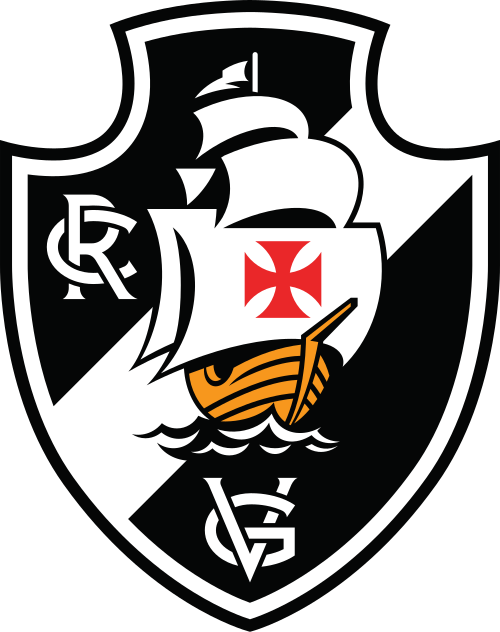

CLIQUE E VEJA O FUTURO

CAMPEÃO DA COPA DO BRASIL E DA SUL-AMERICANA
(se Deus quiser)
PROSSEGUIR
🎵 VAMOS TODOS CANTAR DE CORAÇÃO... A CRUZ DE MALTA É O MEU PENDÃO... TU TENS O NOME DO HEROICO PORTUGUÊS... VASCO DA GAMA, A TUA FAMA ASSIM SE FEZ! 🎵
E AGORA, PROFESSOR?
Opção 1: Dar Nota 10
Opção 2: Dar a nota de √25 × (sen²x + cos²x) + (100 ÷ 20) = 10
NO AGUARDO!
VOLTAR PARA O INÍCIO